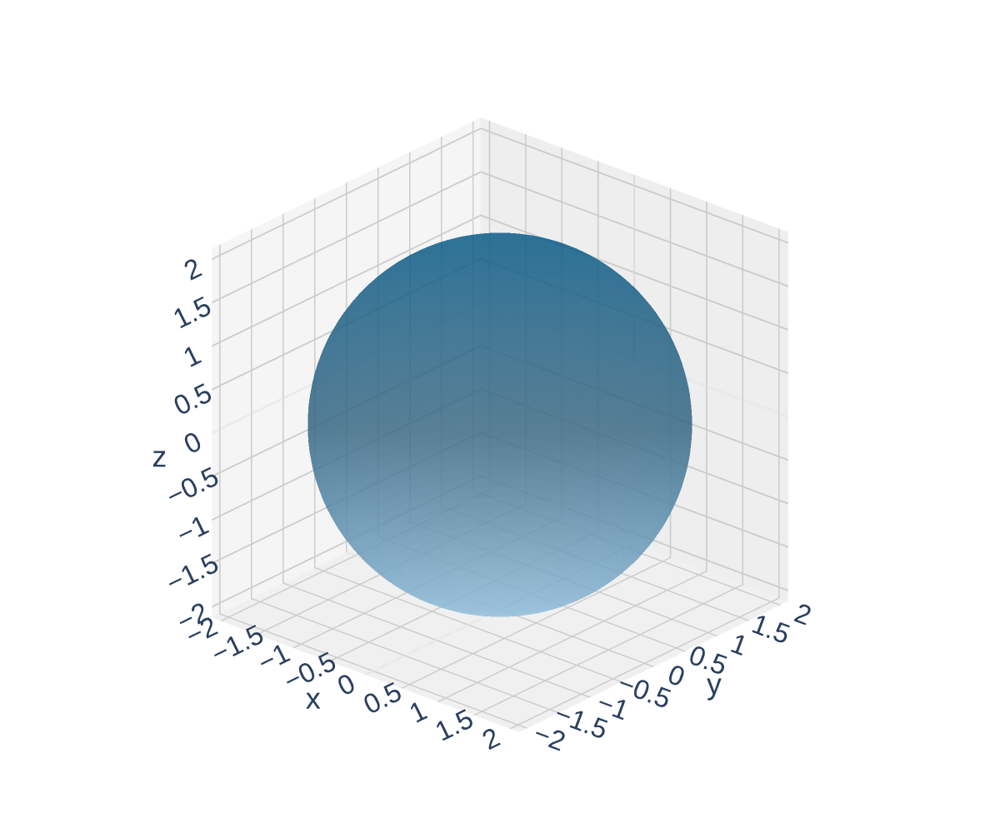
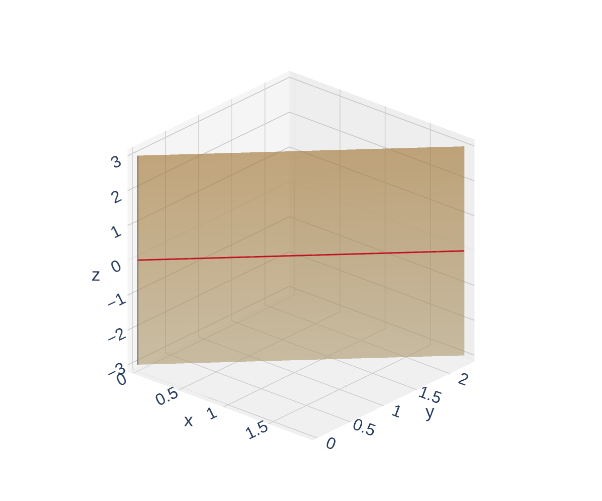
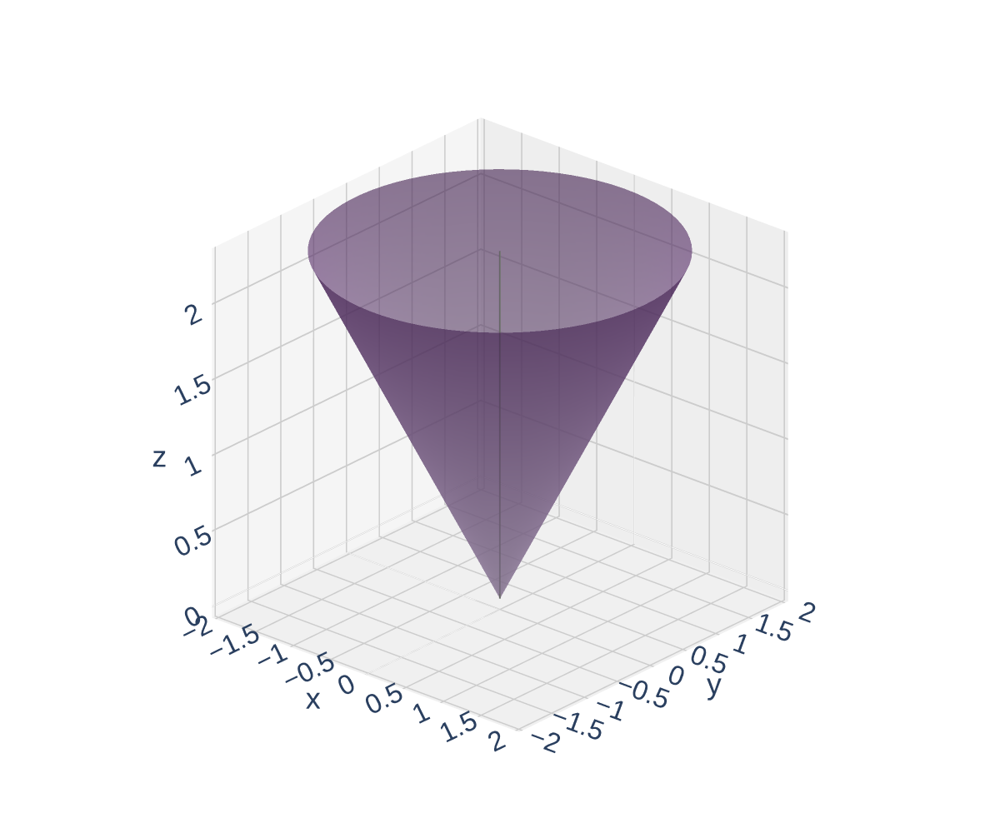
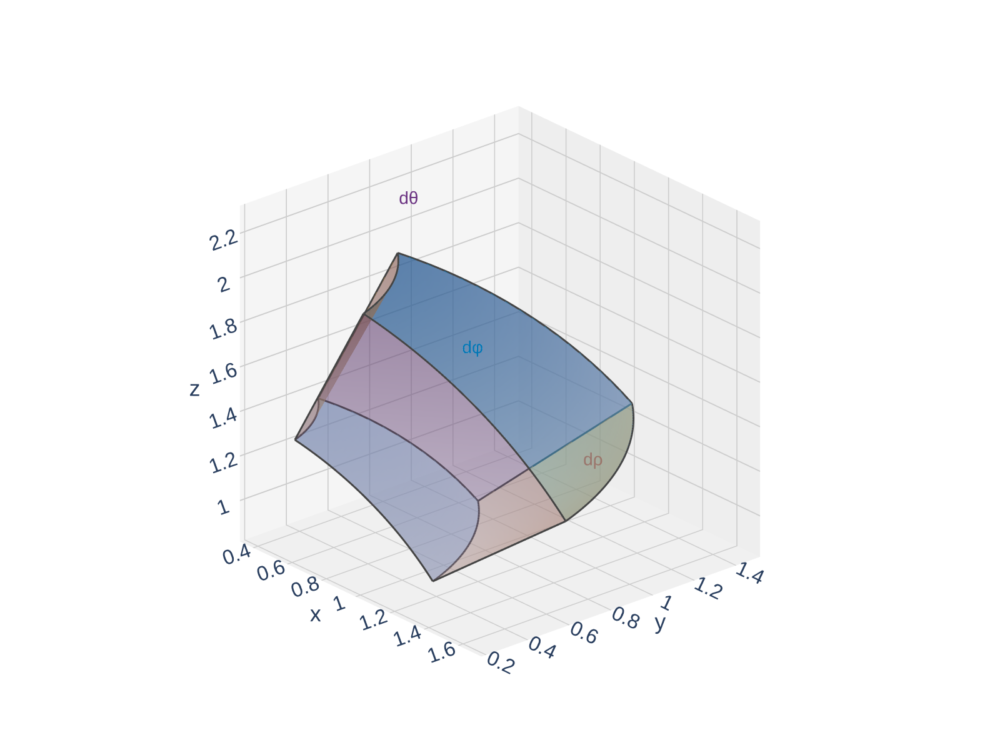

Section 15.8: Triple Integrals in Spherical Coordinates
Multiple Integrals
MTH 310
Calculus III
Why Spherical Coordinates?
The Spherical Coordinate System

Coordinate Surfaces: What Does Each Constant Look Like?



Conversion Formulas
Spherical $\leftrightarrow$ Cartesian Conversions
Spherical to Cartesian:
\[x = \rho\sin\phi\cos\theta, \qquad y = \rho\sin\phi\sin\theta, \qquad z = \rho\cos\phi\]
Cartesian to Spherical:
\[\rho^2 = x^2 + y^2 + z^2, \qquad \tan\theta = \frac{y}{x}, \qquad \cos\phi = \frac{z}{\rho}\]
Quick Check: Convert Equations to Spherical
For (1), use \(\rho^2 = x^2+y^2+z^2\). For (2), write in terms of \(\rho\), \(\phi\) and simplify.
The Volume Element in Spherical Coordinates

Quick Check: Describe the Region
Think about each limit: what does \(\rho \leq 3\) mean? What does \(\phi \leq \pi/2\) restrict? What does \(\theta\) from \(0\) to \(2\pi\) mean?
When to Use Spherical Coordinates
Example 1: Integral Over a Lower Hemisphere
Example 1
Evaluate \(\displaystyle\iiint_H (9 - x^2 - y^2)\,dV\), where \(H\) is the solid lower hemisphere \(x^2 + y^2 + z^2 \leq 9\), \(z \leq 0\).
Set up the triple integral with \(dV = \rho^2\sin\phi\,d\rho\,d\phi\,d\theta\). What are the limits on \(\rho\), \(\phi\), \(\theta\)?
Example 2: Between Spheres, Above a Cone
Example 2
Evaluate \(\displaystyle\iiint_E xyz\,dV\), where \(E\) lies between the spheres \(\rho = 2\) and \(\rho = 4\), and above the cone \(\phi = \pi/3\).
Convert \(xyz\) to spherical coordinates and set up the integral. Recall \(x = \rho\sin\phi\cos\theta\), \(y = \rho\sin\phi\sin\theta\), \(z = \rho\cos\phi\).
Choosing the Right Coordinate System
| Coordinate System | Best When | Volume Element |
|---|---|---|
| Cartesian \((x,y,z)\) | Rectangular solids, no obvious symmetry | \(dV = dx\,dy\,dz\) |
| Cylindrical \((r,\theta,z)\) | Circular symmetry about the \(z\)-axis: cylinders, paraboloids, cones | \(dV = r\,dz\,dr\,d\theta\) |
| Spherical \((\rho,\theta,\phi)\) | Symmetry about the origin: spheres, cones from origin | \(dV = \rho^2\sin\phi\,d\rho\,d\phi\,d\theta\) |
Homework
Section 15.8: 1, 3, 5, 6, 7, 9, 11, 15, 17, 19, 20, 23, 25, 27, 29, 31, 37, 43, 50